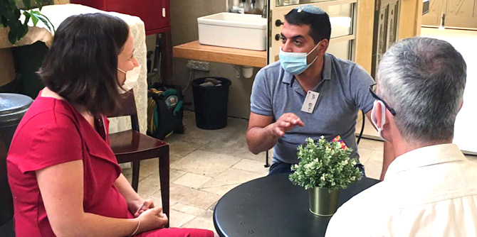
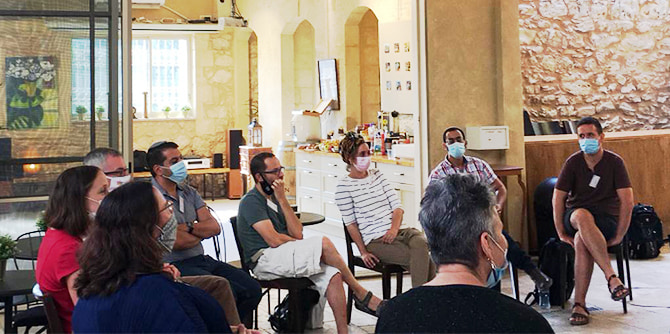

בפעם הראשונה, ובהתרגשות גדולה, פגשו העמיתים זה את זה שלא באמצעות זום. המפגש נערך בחצר בית עתיק בעיר העתיקה בבאר שבע, עם גג נפתח שאפשר אוויר למען הבריאות בעת הקורונה ו"אוויר" וצידה רוחנית כתשתית לפתוח תהליך הלמידה של הקבוצה.
קבוצת המנהיגות כוללת 18 עמיתים מרשימים ממגוון יישובי עוטף עזה ומחמש רשויות מקומיות: שדרות, מ"א חוף אשקלון, מ"א אשכול, מ"א שדות נגב ומ"א שער הנגב. העמיתים פועלים בתחומי החינוך, קהילה, ילדים ונוער, ובהם יזמים ואנשי תעשייה, חלקם מנהלים ונבחרי ציבור ברשויות המקומיות וחלקם בתחומי הביטחון והמשפט. במפגש הפתיחה העמיקו העמיתים את ההיכרות ביניהם, שמעו על פועלה של קרן מנדל-ישראל מפי מנהלת מרכז מנדל למנהיגות בנגב,
ד"ר עדי ניר שגיא, ועל מייסד הקרן,
מורטון מנדל, שנפטר לפני שנה והדגיש במשנתו את חשיבותם של ערכים בתהליך השיפור של חברה אנושית.

מנהלת התוכנית, ד"ר רותם ברסלר גונן, הציגה את הרציונל של תוכנית ההכשרה למנהיגות ואת עקרונותיה, את יחידות הלימוד והחיבור ביניהן, ואת השאיפה לבנות קבוצת מנהיגות חזקה שתפעל במרחב הנגב המערבי ובעוטף עזה בפרט. לדבריה, התקופה הנוכחית דורשת מאתנו למידה גמישה ומגוונת והתאמות מקרוב ומרחוק.
ד"ר עדי ניר שגיא הקריאה את השיר "מציאות" של המשוררת הפולנית ויסלבה שימבורסקה, המחבר בין חלום לאתגרי המציאות, והעבירה את המסר שמנהיגים תפקידם לחלום – לפתח חזון כדי לשפר את המציאות לרווחת האוכלוסייה כולה.
ד"ר גילי זיוון, חברת סגל מלווה בתוכנית, הציגה את מאפייני לוח השנה היהודי בעקבות ניתוחו של פרופ' שבייד. חשפנו את היסודות האנושיים (הבאים לידי ביטוי בחגים ההיסטוריים) הגוברים על חגי הטבע העתיקים והקבועים בלוח השנה המסורתי והישראלי. דיברנו בקצרה על משמעות תופעה זו, המטילה על האדם אחריות עצומה לגורלו, וקינחנו בשירו של סוֹגִיָאל רִינְפּוֹצֶ'ֹה (מורה בודהיסטי טיבטי, מחבר "ספר החיים והמתים הטיבטי") "אני הולך ברחוב", המתאר את הכוח הדרוש כדי לחולל שינוי בחיינו.
לסיום בירכנו לשנה טובה ונשארנו עם טעם של עוד. מצפים ומחכים למפגשים הבאים עם תחילתה הרציפה של התוכנית, מיד לאחר החגים.

{kind=link}
{kind=link}